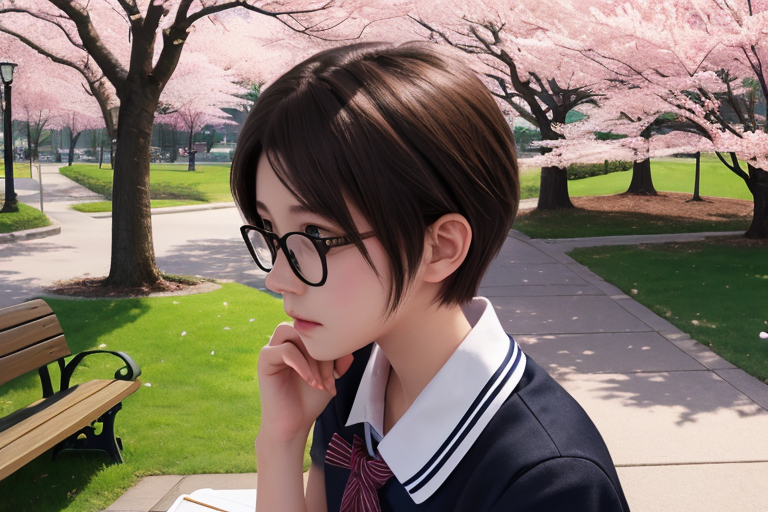

新しい生活
朝靄が遠くで薄い煙のように漂っている。桜井家の前に駐車したトラックから降りたのは、結衣の同級生だった藤原翔太郎だ。「おはよう」と挨拶し、両手に持った紙袋を広げて中身を見せる。
「朝露がまだついてるよ」
青い空気が静かで、春らしい光の中で見え隠れする木々の緑。引っ越し当日であるにも関わらず、まだ桜の花びらが風に乗って舞っている。「少し早いけど」と翔太郎は言った。
紙袋からはお茶菓子と手作りのおむすびが見える。
結衣も出てきた。「こんにちは」「朝から申し訳ないね」
彼女は短い髪を耳に当て、黒縁眼鏡の奥で静かに笑った。それを見た翔太郎もうなずいて、「大丈夫ですよ」と言った。
二人の影が薄暗い玄関先に伸びている。
「まずは大きいものから片付けていく方がいいよね」
結衣はそう言い、大きなスーツケースを引っ張り出していた。「じゃあ僕たちも手伝えますよ」
窓ガラスにはまだ朝日が反射し、室内の明るさと外からの光との狭間で揺れ動く。
転居する家財道具は結衣一人では運べないほど多かった。
「これでも古いものが入ってるのはほんの一握りだけだから」
翔太郎に紛らわし、思い出の品々を整理していく。そこには高校時代の友人からの手紙や写真が並んでいた。
紙袋は開けても閉じてもいなかった。
二人で荷物を運び出す中、結衣は窓から外を見ていた。「春休みに入った街だからね」と翔太郎に言うと、「そうですね」と彼もうなずく。桜の花々が散り始めている。
「これから新しい生活が始まるんだ」
雨雲の薄い影が通りを通過し、遠近法で伸びる線は光とともに揺れ動いている。「大丈夫だよ」翔太郎にそう言われて結衣も頷いた。
二人の声が静かな家の内側で響く。その間から聞こえるのは、春らしい風と通りを行き交う人々の話し声。
紙袋の中身を一つずつ取り出すたび、ふたりは話した。「これから何する？」
「大学生活頑張ろうね」
言葉が空気中に溶け込んでいく。
荷物が少しずつ少なくなると、「これで最後か」と翔太郎も言った。
結衣の手元にはもう何も残っていない。しかし、彼女の表情は変わりない。「あとは片付けるだけだよ」
春日和に浮かぶ白い雲を眺めながら、二人は荷物整理作業を終えた。
その光景が静かな余韻の中で広がっている。
「新しい生活」という言葉の重みもまた、静けさの中に溶けていった。
高校時代の思い出
春の陽射しは、窓ガラスをゆっくりと暖める。桜井結衣はリビングに置いた古いソファで腰掛け、手には高校時代のお友達から送られてきたメールを見るスマホがあった。部屋いっぱいに広がる薄い花粉の香りとともに、懐かしい顔々を思い出す。
携帯電話の画面を見つめながら、彼女は小さく微笑んだ。「今度会おうね」という言葉が、結衣の心の中で春風のように静かな渦巻きを作った。ソファに深呼吸をするように体を入れ替えて座る。窓枠からは青空と白い雲が、その向こうには遠くで鳴っている鈍重な鳥たち。
スマホを下ろすと、結衣は隣のクローゼットへ足を向けた。「新しい生活が始まるけどね」と彼女自身に言い聞かせるように。中に入るとすぐに手が迷い出す。冬物のジャケットやセーター、高校時代から大切にしてきた水色のカーディガン。その上着は春先までずっとクローゼットで眠っていた。
「翔太郎さんと話したときから懐かしいなって」と彼女はつぶやいた。「でもねぇ、それ以外にも会うべき人がいるような気がするんだよね」そう言って結衣は友人達の送るメッセージを読み返す。高校時代に共に過ごし青春を取り戻せた人々への感謝から溢れ出すように、懐かしい思い出が蘇った。
彼女は一歩リビングに戻り、電話帳を開いた。「今日会うんだよ」とつぶやきながら、指先で古い番号を追っていく。ページの端に黄色いマーカー線があり、「美咲」の名前があった。その隣には「千秋」「奏音」そして「春花」と続く友人たち。
結衣は電話帳から指を離し、窓辺へと向かった。「みんな元気？」そう言って彼女は青い空を見上げる。暖かい風が頬に触れてきた。「きっと会うことができて嬉しいよね」
スマホの画面には「待ってるよ」という言葉があった。
昼下がり、桜並木の中を歩く結衣と友人たち。春日を背負った彼らはそれぞれの表情で青春時代を振り返る。笑い声や歓談が静かな道に響き渡っている。「あの頃に戻れるなら」という誰かの一言から始まった会話、それは高校時代のある夏休みのことを思い出させた。
「あの日、みんなと公園で一夜明かしたんだよね」結衣は笑いながら言った。その声が風に乗って木々に伝わっていく。「朝になって顔を見合わせて恥ずかしかったけど」
それぞれの声色を聞き分けつつ、彼女たちの中から懐かしみや感動があふれた。「あの時はほんとうに楽しかった」と奏音は言う。春風が髪を靡きながら、その言葉と一緒に桜の花びらも舞い上がっていく。
「でもね」と春花、「今度こそ、みんなで新しいことを始めることができるんじゃないかな？」
公園ベンチに腰掛けた人々はそれぞれ微笑む。「そうだよね」と結衣も同意した。彼女たちは互いを見つめ合いながら、青空の向こう側にある新たな冒険を予感する。
「ここから先が大切だよ」美咲が言うと、千秋は頷いた。「みんなと一緒にいる時間だからね」
それぞれに異なる表情で微笑んだ人々。彼らの中には高校時代からの繋がりがあり、それは結衣にとって新しい生活の始まりを祝う贈物だった。
公園から見える遠くまで広がる景色は柔らかな光に包まれていた。「次の一歩へ進んでいこうね」と奏音が言ったとき、「そうだよね」春花も賛成した。その声が吹き抜けていく風に乗って、青空の中に溶け込んでいった。
結衣は友人たちと過ごす時間から生まれた新たな力を胸に受け取りながら、公園を後にした。「これからも一緒にいようね」と彼女自身に向けて言い聞かせるように微笑んだ。春の日差しが背中を暖めていた。
遠くで鳩が鳴き始める音と共に、桜並木の中から薄暮が始まったのであった。
道端にはまだ枯れ葉と新芽が混ざり合うような景色があり、その先に広がる日常の風景はどこまでも続くように見えた。結衣の視界を捉える春日や青空はこれから迎える日々への期待感と共に心地よく感じられた。
公園から少し離れた住宅街の中には、静寂と人里に混じり合うような穏やかな時間が流れている。「新しい生活が始まるね」と彼女の中で新たな決意が芽生えていた。春の暖かさは結衣を包み込むように優しく響き渡っていた。
公園から見える風景は遠くまで続いており、その向こうにはさらに広い世界が待っていることが感じられた。「一緒に歩もうね」と友人たちとの約束と誓いと共に彼女の心に刻まれていた。これから迎える日々の始まりを祝うかのような春日が静寂な風景の中で優しく微笑んでいた。
公園から見える景色は遠くまで続くように、その向こうには新たな冒険や出会いが待っているようであり、結衣はそんな未来に向けて新しい一歩を踏み出したのであった。
第3章
春の風が街角に柔らかな光る粒々の舞い降りを告げる。桜井結衣は、日差しの下で細長い影を作りながら、大学に向かう途中だった。空には薄く白い雲が流れ、遠くでは鳩たちが羽音高く飛び交っている。
「春休みも終わりだね」と、道端から友人の声が聞こえてくる。振り返ると彼女は笑顔で手を振っていた。「準備した？」
結衣は頷きながら、「うん」と答えただけだった。それ以上の言葉は口にしなかった。
大学のキャンパスでは春休み明けの学生たちがあちこちで再会を喜んでいる。人々が行き交い、声が重なり合い、春の訪れと共に新たな一歩が始まるように感じた。「でも」と結衣は静かにつぶやく、「私は何に向けて進んでるんだっけ？」という疑問に向き合う。
朝から続く晴天は空を青々と染め上げ、日差しの下で新しい一年が約束されていた。しかし何か物足りなさを感じていた彼女にとって、これは同時に孤独を強調するものでもあった。「大丈夫」と自分自身に言い聞かせながらも、不安定な心地は消えずにいた。
結衣は大学構内のカフェテリアで友人たちとランチをする約束をしており、その時間までまだ少しかかった。そこで彼女は自分の鞄を手繰り寄せる。「あそこにしよう」と決断した。公園のベンチに腰をおろし、春風が木々から漏れ出す緑色の光を受け取りながら。
友人の声とともに、後方からの足音が聞こえる。振り返ると翔太郎だった。彼はいつもの笑顔で手を振る。「元気そうだな」といった言葉と共に歩み寄ってくる。
「春休みいかが？」
「うん、まあ普通に過ごしたよ」
そんなやり取りの後も二人は何処か無駄なく会話を続ける。しかし結衣は彼と話す中で自分の中にある問いかけを鮮明にする。「新しい生活への決意」という言葉とは何なのか？それがただの口癖なら、それはどれだけ虚しいものだろうか？
翔太郎が遠ざかる足音と共に静寂が戻ると、「でも、春は新しく始めるべきだよね。」と小さな声でつぶやいた。「何か新しいこと始めよう」と彼女自身に言い聞かせながら。
それから少しの間も結衣は何度も自分の中に問いを投げ続けた。「何に向けて進んでいるのか？」という疑問への答えを見つけることが大切だと何度も心の中で繰り返す。だがその答えはまだ見えてこなかった。
しかし、春日が彼女と並んで立っていた。
「新しい一歩が始まる」という言葉に包まれながら、「でもまずは自分が何を望んでいるのか」それが見えない限り進めばよいのだと自分自身に言い聞かせた。
第4章
桜花の舞い
春風が公園に優しく吹き込んでくる。桜の木々から散る薄紅色の花びらが、草の上でゆっくりと滑るように転がっていく様子は、まるで時間そのものがゆっくり流れているかのように感じられた。清冽な水を含んだ空気には、土埃や春泥棒の香りも混ざっている。
結衣はベンチに腰掛けたまま桜花を見つめ続けた。彼女の心の中では様々な感情が渦巻き、それらが互いに対立しながらも共鳴しているように聞こえた。「でも」と思わず口に出そうとした言葉を飲み込む。
「結衣さん？どうしたんですか？」
翔太郎の声に振り返ると、彼はいつの間にか近くまで来ていた。
「あ、その…新しい学年のスタートについて考えただけで」
彼女が無意識につぶやいたその一言には、自分の気持ちへの不満と、それに対する困惑が詰まっていた。
「何を決めるべきなのか、分からなくなったって感じですか？」
翔太郎の問いかけに、結衣は頷きつつも再び視線を桜花に戻した。彼女の耳には遠くで子供たちの笑い声と公園内でのチャイムが聞こえてくる。
「うん…でもね、僕があなたを見ている限り、それはまだ決まったものじゃないよ」
言葉は簡潔だったが、その中にある暖かさと確信は彼女を包み込むように感じられた。結衣の心に少しだけ光が灯り始める。
「あんな風に…桜花のように柔らかい気持ちでいることは大切ですよ」翔太郎は微笑んだ。「それが何を意味するのか、それを知るのに時間も必要です」
結衣は頷きつつ彼を見返した。その視線の先には優しさと理解があり、それはいつでも支えになるかのように見えた。
「桜花みたいに…柔らかい気持ちでいる」とつぶやく。
翔太郎が静かな笑みを浮かべてうなずいた。「それが大切さを教えてくれるでしょう」
結衣は再び桜を見上げた。その舞い方はまるで迷路の出口を見つけ出したような清々しさを感じさせる。
彼女の中では新しい決断ができつつあった。
「ただ、僕が君を支えるよ」と翔太郎に言った。「一緒に進もう」
そうして二人はベンチから立ち上がり公園を後にした。その背後には桜花の舞い続けた姿があった。
結衣の心の中では新たな扉を開く準備ができつつあった。
公園からの光景が彼女たちを見送るかのように、空に広がり続けていた。
公園外へ続く道は遠くまで見えず、しかし歩み出すことでその先は明らかになる。
第5章
春の夜、月が満ちる頃。桜並木の公園には微かに花弁の香りが漂っていた。小さな石畳で舗装された道端では露草が青々と育っている。結衣は家の近くにあるこの場所をよく訪れていた。
「結衣、何か決まったかい？」
翔太郎が横から声を掛けてきた。彼の笑顔にはいつも安心感があった。「うん、考えてるところさ」と答えながらも、胸の中では小さな戦いが始まっていた。新しい学年のスタートについて、自分は何を選択するべきか。
「でもね、翔太郎……」結衣は迷った末に言った。「私って時々臆病になるよね」
風が桜の枝を揺らし、月明かりの中細かな花びらが舞い上がっていく。その光景を見つめながら彼女は続けた。
「でも……新しいことに挑戦する勇気も欲しいなと思うんだ」
翔太郎は何事かを考えるように少し黙った後、「君ならできるよ」と優しく言った。「大丈夫、僕が側にいるから」
公園のベンチで一息ついた二人。静かな夜道を歩き出すと、路地裏からは遠くで子供たちの笑い声が聞こえてきた。
「あそこは夏祭りがあるよね」結衣は思い出したように言った。「来週か？」
翔太郎も思い出し、「そうだね」と応じた。彼女の目元には自然と微笑みが浮かんでいるのが見えた。「やっぱり、色々なことが始まるんだね……春って感じ」
遠くに聴こえる夜の静けさを背景に、結衣は自分の心の中を探し始めた。前向きになる気持ちと共に不安も押し寄せてくる。
「翔太郎…君がいてくれるからこそ、新しいことに挑む勇気が出たんだ」
彼女の言葉には感謝と共感が溢れていた。「だから……」
足元に光る石畳の上で一歩踏み出す。その瞬間、夜空を彩る満月を見上げると、まるで自分が星と一緒に舞い上がりそうだった。
「決心した」結衣は静かに言った。
微かな風が吹き抜けていく。「どんな形であれ……新しいスタートを切ること」
翔太郎の顔色を見て、「君も一緒に来て？」と続けた。彼女の言葉と共に手を取り合う二人、月光で浮かび上がる影。
「もちろんさ」
路地裏から聞こえる子供たちの声は遠くへと消えていった。結衣が踏み出したその一歩が新たな始まりを告げるかのように。
春の夜風に包まれた公園では、月明かりの中で二人の影だけが静寂の中でも光っていた。
遠い夜空を見上げて彼女は小さく息を吐いた。「これからも前に進んでいくよ」
その声は誰にも届かないほど微かだった。しかし、桜並木には風に乗って小さな決意の音色が広がっていく。
公園から聞こえる最後の一瞬だけ静まり返った夜。
遠くに小さく光る街灯を背景に二人の影だけがゆっくりと歩み去っていく様子は、春闇の中に美しい絵のように浮かび上がっていた。
第6章
春の薄暮、静かな図書館。窓枡から差し込む陽光が淡い緑色に染まり、本棚と背中の間で揺れ動く陰影を作り出す。結衣は机に向かい、手帳を開いてページをめくる音だけが響く静寂の中で深呼吸する。
「新しいことって、いつだって怖くて大変だよね」
結衣の横顔に映るのは、窓枡から差し込む夕暮れ色の光。彼女は少し迷うように目線を落とす。手帳を開き、前向きな決意をしたばかりだが、心の中で葛藤を感じているのが伝わってくる。
「でもね」翔太郎が口元に微かな笑みを浮かべ、「結衣なら大丈夫だよ」
彼女の隣で静かに佇む。光の粒が瞳の中へと舞い込んでいくように見える。「勇気、持とう」と頷く。二人は再び視線を合わせる。
「そうだね…でも今から始められる自信がないんだ」結衣はため息混じりに言う。
「はじめの一歩って大事だよ。一歩進むと次のステップが見えてくるさ」
翔太郎の言葉に、結衣の肩口がかすかに揺れた。「あんたにはそれができるね」と少し笑顔になる。
その瞬間、彼女は迷いを振り払い、自分自身との約束をする。
「新しいこと…始めよう」小さく呟き、「でも不安もあるよ」
翔太郎の視線が温かさを帯びて彼女の側面に触れる。「それでも進むんだ。一人じゃないからね」と静かな声で言う。
その言葉と共に、結衣は自身との約束を新たにする。
「うん…前へ進め」
手帳に戻る視線と重なったのは、窓枡からの光が柔らかく揺らいだ瞬間。彼女の中では新たな始まりが始まる。
風向きとともに春の匂いも微かに混ざり合い、図書館はその静けさを保ちながら、二人の話を遠巻きに見守る。
結衣は再び手帳を開くとページをめくる。「ここから始めるんだ」
翔太郎が肩を抱いて、「前進だよ。一緒に」と微笑む。
光の中で図書館の本棚との間で揺れ動く影。その中には新しい一歩への勇気が溢れている。
春色に染まった陽光は、二人の姿に優しく触れていくように感じられた。「また新たな始まりだな」
遠方から聞こえる風鈴の音が図書館を包み込む。
手帳を閉じた結衣の指先には暖かな光が映る。
その場面は静かに終わりを迎えた。春闇の中で、新しい一歩への決意が静寂と灯りの中で輝き始めるように感じられた。「これからだな」
音もなく、彼らの周りでは新たな旅が始まる。
手帳を開いたままの結衣は、「前へ進もう」と心で語る。
図書館に流れる時間がゆっくりと刻みを進めている。風鈴が揺れ、春日光が柔らかく窓枡から漏れてくる。「新しいことが始まる」
手帳のページを開き閉じする音だけが響く静けさの中で、「進むしかないね」と結衣は穏やかな微笑みを浮かべる。
その場面は、春闇と暖かな光に包まれながら終わりを迎える。新たな旅が始まる予感と共に。
「新たなる一歩へ」
図書館の静寂が彼らの約束を温かく見守るように響き渡っていた。「これからが楽しみだな」と翔太郎は微笑む。
春色に染まった陽光の中で、新しい物語への扉が開け放たれる。その先には未知なる風景が広がっている。
「進もう」
結衣の手が再びページをめくる音だけが響く静寂の中、「また新たな始まりだ」と彼女は心に誓う。
春闇の中で、新しい旅路が始まる予感と共に。「ここから始めようね」と翔太郎と約束し合い、二人の影が図書館の一角で暖かな光と溶け合うように消えていく。
第7章

第7章
朝霧が街の一角にかすかな光を弾き、日差しがその薄い布地から少しずつ這いずり上がり始める。桜井結衣は窓際で椅子に座っていた。コーヒーを手にして深呼吸する。空気には昨日の雨が残っている。それが、今日という日の肌に触れる。
「準備できてる？」
電話口の翔太郎の声はいつも通り静かだが明るい。
結衣は頷きながら答える。「うん」その一言だけで彼女は落ち着くことができる。背後の壁から微かな音が聞こえてくる、それは図書館で借りた本をページめくりする音だ。
「来週の水曜日には新しいスタートを切るんだね」と翔太郎。
結衣の胸の中で鼓動が少し早くなる。「うん。決意したから」
街路樹の葉は昨日までの雨に濡れきって重たげだが、それでも光を受け止める力を保っているようだ。
「どんなことでも心配なら言ってくれ」
彼女は何度も頷く。
「大丈夫、一人じゃないよ」と彼が言った言葉。その温かさを今になって再び感じ取る。
コーヒーの香りはほんの一瞬に広がった後、部屋の中であっという間に消えてしまうように思えた。
結衣は机に向かい、昨日から始めてきた計画書を開き直す。
ページいっぱいに書き散らされたアイデアや数字。色とりどりのマーカーで囲まれたいくつかのキーワード。全ては新たな旅路を照らす灯火のように輝いている。
「ねえ、これ全部自分の選択なんだよね」と電話口に向かって話しかける。
翔太郎からは笑い声が聞こえてきた。「そうだよ」
彼女の視線先には小さなプランターがある。緑色の葉を持つ新芽がそっと地面から顔を出していた。
「これでいいんだ、きっと」
もう一度決意してみる。自分一人では難しいかもしれないことがあっても、前に進む選択は間違いではないように思えた。
電話線を切った後、結衣は何度か深呼吸した。
春のまだ寒さが残る空気の中、街路樹の葉には初めての日差しが当たっている。それらが光を反射して窓ガラスに小さな星のように散乱する様子は、彼女にとって新天地への希望そのものだった。
部屋の外から聞こえる鳥たちの声もまた、新しい旅路へと誘うようだ。
結衣は立ち上がり、プランターに向かって足を運んだ。手で土をつまみ上げて植物に触れるようにさわる。「もう少しだよ」と小さな声で囁く。
そして再び窓辺に戻り、今日一日の始まりを感じながらコーヒーを一口飲む。
日差しは徐々に強くなり始めている。春という季節がその存在感を強めつつあるようだった。
結衣の心の中では新たな決断が一つ深く埋め込まれていく過程が始まったように思えた。
第8章
春の薄曇り。風に乗って桜の花びらが舞い落ちる。結衣の部屋からは、庭に植えられたチューリップと菜種油の甘ったるさが漂う。
窓辺で立ち尽くす彼女は、手帳を開き指先でページをめくる。紙面には細かく計画された日々が書き連ねられていた。
「でも、これだけでは足りない」と結衣は唇に触れながら呟いた。「もっと何か必要なものがある」
携帯電話を取り出し、通話ボタンを押す指がかすかに震える。画面には翔太郎の顔写真が表示される。
「もしもし？」「あっ、結衣さん」
笑い声と軽快な会話を聞きながらも彼女は迷い続ける。
晴れやかな空気に混じり、微風が窓から吹き込んでくる。春らしかったその光景を眺めつつ、彼女の瞳からは一瞬だけ影が掠める。
「翔太郎…結衣さん？」「うん」
「新しい生活に向けて準備している？」
携帯の向こうで聞こえる声に頷く。
「そうだよ。でもまだ不安だよね」
花びらが窓枠をつついて、音楽のように軽やかに床へと落ちていく。
「結衣さん…」彼女の心は揺れていた。「大丈夫だよ」「うん」
風の通り道から、遠くで小さな子供たちの笑い声が聞こえる。
その中に紛れたように、彼女自身も同じような音を立てていた。それは小さくて確かな希望の鳴り響きだった。
「でもね」
結衣は静かに続けた。「もっと必要なんだと思う」「何が必要？」
聞き返す翔太郎に向かって、口元が緩む。
「一緒にいてくれる人」
春日のような柔らかい光の中で、彼女はその言葉を重ねていく。そして自問する。
もう一人でいるのは嫌だ。でも他人頼りになるのも違う。
そう思っていた結衣だったが、今ではそれだけではない何かを探していた。
それは自分自身と向き合うこと。
不安な気持ちとは格闘しながらも、それでも前に進む勇気を支えにするもの。
風と共に散る桜の花びらは、彼女の心に新たな希望を紡いでいく。やがて、視界には緑が広がり始める。
その光景の中で、結衣は深呼吸する。
「翔太郎…」「なんだ？」
「一緒に新しい世界を作ろう」
風と桜の花びらで包まれた部屋を背に、彼女は一つ大きな決断をする。